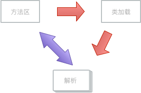

静态解析条件如下
方法在程序真正运行之前就有一个可确定的调用版本，并且这个方法的调用版本在运行期是不可改变的
Class（类）
依据jvm对加载器加载的规定一个类只能由一个类加载器加载一次到方法区中作为访问该类的入口地址直到卸载。所以在调用方类进行解析阶段可以将该类的方法区的偏移量地址替换符号引用，解析步骤如下：
1.通过符号引用到方法区中查找是否已经存在，存在返回 2.jvm会将该类的全限定名传递给调用方的类加载器，以此类推可能还会包含其他的类的加载以及验证等 3.如果被调用的类是一个数组其他都一样，由jvm生成一个代表此数组的大小和元素new String[]{"a","a"} ; 4.调用方的常量池中代表该类的符号引用解析为直接引用

public class B {
public static String a = "a" ;
public String getAbst() {
return "B" ;
}
}
public interface Ainter {
public static String a = "a" ;
public String getAbst() ;
}
public class A extends B implements Ainter {
public static String a = "a" ;
public String getAbst(){
return "A" ;
}
}
public class org.bh.controller.A extends org.bh.controller.B implements org.bh.controller.Ainter
minor version: 0
major version: 52
flags: ACC_PUBLIC, ACC_SUPER
Constant pool:
#1 = Methodref #5.#21 // org/bh/controller/B."<init>":()V
#2 = Fieldref #4.#22 // org/bh/controller/A.a:Ljava/lang/String;
#3 = String #7 // a
#4 = Class #23 // org/bh/controller/A
#5 = Class #24 // org/bh/controller/B
#6 = Class #25 // org/bh/controller/Ainter
#7 = Utf8 a
#8 = Utf8 Ljava/lang/String;
#15 = Utf8 Lorg/bh/controller/A;
#16 = Utf8 getAbst
#17 = Utf8 ()Ljava/lang/String;
#20 = Utf8 A.java
#21 = NameAndType #9:#10 // "<init>":()V
#22 = NameAndType #7:#8 // a:Ljava/lang/String;
#23 = Utf8 org/bh/controller/A
#24 = Utf8 org/bh/controller/B
#25 = Utf8 org/bh/controller/Ainter
{
public static java.lang.String a;
descriptor: Ljava/lang/String;
flags: ACC_PUBLIC, ACC_STATIC
public org.bh.controller.A();
descriptor: ()V
flags: ACC_PUBLIC
Code:
stack=1, locals=1, args_size=1
0: aload_0
1: invokespecial #1 // Method org/bh/controller/B."<init>":()V
4: return
LineNumberTable:
line 4: 0
LocalVariableTable:
Start Length Slot Name Signature
0 5 0 this Lorg/bh/controller/A;
public java.lang.String getAbst();
descriptor: ()Ljava/lang/String;
flags: ACC_PUBLIC
Code:
stack=1, locals=1, args_size=1
0: getstatic #2 // Field a:Ljava/lang/String;
3: areturn
LineNumberTable:
line 7: 0
LocalVariableTable:
Start Length Slot Name Signature
0 4 0 this Lorg/bh/controller/A;
}
Fieldref（字段）
要解析一个未被解析过的字段符号引用，首先将会对字段表内class_index[2]项中索引的Class_info符号引用进行解析，也就是字段所属的类或接口的符号引用 ,如果在该类中能找到匹配的目标名称和字段描述符号，就返回否者如果实现了接口就从下往上的查找返回，是否去父类中查找
CONSTANT_Method ref_info（方法）
CONSTANT_InterfaceMethodref_info（接口方法）
- CONSTANT_MethodType_info（方法类型）
- CONSTANT_MethodHandle_info（）
- CONSTANT_InvokeDynamic_info
以下这五种的调用可以在解析阶段进行确定，属于静态解析
invokestatic(调用静态方法)
用static修饰的方法或者类，在使用时候必须指定具体的类型所以在解析阶段就可以确定一个版本invokespecial(调用实例构造器＜init＞方法、私有方法和父类方法)
invokevirtual(调用所有的虚方法)
invokeinterface(调用接口方法，会在运行时再确定一个实现此接口的对象)
静态类型的类（内部类）